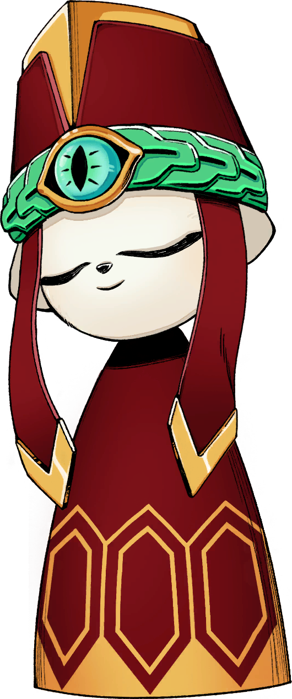

.ᐟ.ᐟ Boss
Ji is a solarian with snow white fur and a thin, androgynous build. He wears a yellow garment that exposes some of his sides, as well as his arms, hips, and legs, with a loincloth hanging in front and behind. He also wears a large red and and yellow fez-like hat that descends into a cloak behind his back with golden honeycomb patterns at the bottom. On the front of the hat hang two smaller red tassels, each tipped with gold. The band of his hat appears to be made of a thick jade ring, featuring a large, moving eye on the front. Ji's fingers are tipped with long, jade claws. He possesses a levitating orb that resembles an Armillary sphere, which he uses during divination.
Ji became a member of the Tiandao Council, and subsequently a Sol, in order to protect the Grotto of Scriptures. Ji once met Kuafu, and foretold the engineer's fortune; he determined that Kuafu would spend the rest of his life away from his hometown. Kuafu rejected the validity of this fortune, considering it to be nonsense.[3] Ji was present for the two Council meetings where Yi proposed the Eternal Cauldron Project. He remained silent and did not participate in the discussions of either meeting. As part of the project, he was given administration over the Grotto of Scriptures. At some point, Ji was apparently informed by Eigong that she was responsible for the synthesis and subsequent pandemic of Tianhuo Virus, and chose to continue cooperating with her. While unaffected by the effects of the Tianhuo, Ji allowed Eigong to experiment on him in her search for a cure for Tianhuo. On the eve of New Kunlun's launch, Eigong made a breakthrough in her research with data from Ji's cells; she believed it could be not only be used as a cure for Tianhuo, but also be used to achieve true immortality.[4] From this research, Eigong developed the Tianhuo Serum, which she believed could potentially cure Tianhuo, and started testing its effects on the newly recruited Dusk Guardians members throughout the years. Also known as the Kunlun Immortal, Ji is an enigmatic figure with a long history. His exact origins are unknown, but he is known to have been alive for many thousands of years, having seen the rise and fall of countless great historical figures. At some point early in his life, perhaps as a child, he was worshipped for his potent abilities of divination, likely among his other supernatural abilities, such as his agelessness. Throughout his life, he was part of many different groups, and witnessed many historically significant events. In the Turbulent Era, Ji assisted Jietong, the final emperor of the Jie Kingdom, as the seer of the Jie Kingdom. The day the Fangshi Guild overthrew the oppressive reign of the emperor, Ji was present when Jietong wrote the Parting Missive and during his subsequent suicide. After the Turbulent Era came to an end and Origin Era was proclaimed, Ji became affiliated with Lear and his Fangshi Guild. He served as the deputy captain of the Fangshi Guild Elite Guard, and worked with Lear on science and technology research. In the 10th year of the Origin Era, the day when Lear disbanded the Fangshi Guild, Ji was present during Lear's Inaction Declaration. He was also later beside Lear during his departure from the living realm to the Limitless Realm. Ji spent a long time secluded in the Grotto of Scriptures to protect Lear's achievements. To preserve the memories he wished to remember, Ji recorded his recollections of events upon black stone steles within the Ancient Stone Pillar. Originally beginning as a casual hobby, this endeavor gradually became a behemoth of information: the sheer quantity of these steles is said to span the entirety of the Solarian civilization, including its rise and fall.[1] Because of his long lifespan, Ji experienced the repeated loss of all of the people he ever cared about, as they all eventually died. Consequently, he became deeply envious of those who ended their lives spectacularly, and developed a deep yearning for a magnificent curtain call of his own.
✦·┈๑⋅⋯ ⋯⋅๑┈·✦✦·┈๑⋅⋯ ⋯⋅๑┈·✦✦·┈๑⋅⋯ ⋯⋅๑┈·✦✦·┈๑⋅⋯ ⋯⋅๑┈·✦✦·┈๑⋅⋯ ⋯⋅๑┈·✦✦·┈๑⋅⋯ ⋯⋅๑┈·✦✦·┈๑⋅⋯ ⋯⋅๑┈·✦✦·┈๑⋅⋯ ⋯⋅๑┈·✦✦·┈๑⋅⋯ ⋯⋅๑┈·✦✦·┈๑⋅⋯ ⋯⋅๑┈·✦✦·┈๑⋅⋯ ⋯⋅๑┈·✦✦·┈๑⋅⋯ ⋯⋅๑┈·✦✦·┈๑⋅⋯ ⋯⋅๑┈·✦✦·┈๑⋅⋯ ⋯⋅๑┈·✦✦·┈๑⋅⋯ ⋯⋅๑┈·✦✦·┈๑⋅⋯
𒁍 Combat Appearance
» Young Form
- Shorter than Yi.
- Maroon priest's hat with an inset gold trim that cuts into the center. Has a green metal band with a snake pattern and a large blue eye in the center. The hat has fabric that droops down to the shoulders and ends with gold chevron edges.
- Outfit is a cloak that follows the same colors as the cap with gold hexagonal trims covering the bottom.
- Almost always has eyes closed, only opening them slightly, sometimes showing blank white pupils with clear edges.
» Adult Form
- Levitates in the air and extends limbs to regain similar proportions to an adult Solarian.
- Reveals clawed green fingernails and a slightly scruffy fur.
- Hat and cloak merge into one and spread outward.
- Reveals inner clothing, a gold and tan triangular cross-shaped scapular that droops between the legs; shoes are the same maroon as the hat.
- Psychically holds an armillary sphere that contains space particles within it.
- Wields a khakkhara for crimson attacks.
𒁍 Combat
Ji cannot be hit during a divination process.
- Divination Orbs can't be air-parried (unupgraded version), only Tai-Chi Kicked.
- Divination Orbs of the same type can repeat in a single divination.
- Can't Unbounded Counter Crimson Rings.
𒁍 Phase 1 Attacks
Ji will teleport to the center of the stage...
𒁍 Possible Divinations
-
Pot (Green)
- Drops a pot of health or 1 azure sand...
-
Tornado (Blue)
- Fires 5 homing swords in alternating directions...
-
Whirlwind (Purple)
- Drops an armillary sphere...
- Note: Can cancel black hole by using Cloud Piercer...
-
Sun (Yellow)
- Drops an armillary sphere on one side of the arena...
-
Swords (Red)
- Will do 3 random attacks before firing one sword...
𒁍 Potential Attacks
- Fires 2 swords that boomerang back before hitting Yi.
- Pulls sword from the ground and tries to hit Yi twice.
- Fires a homing sword.
- Fires 2 swords.
- Fires 2 swords that boomerang back after hitting Yi.
- Can Unbounded Counter Wormhole.
𒁍 Phase 2 Attacks
Start of phase 2...
𒁍 Divination Changes
-
Sun
- Will charge up a crimson slam...
-
Whirlwind
- Drops either a big or small black hole.
-
Tornado
- Disappears from set of attacks.
-
Pot
- Drops a pot of health or 1 azure sand...
-
» Swords
- 2 random sword attacks.
After doing a divination attack he will do 3 attacks in alternating order. Those attacks are:
- Sends out homing sword while charging crimson slam.
- Fires one dagger while on the ground before Tai Chi dash.
- Can Unbounded Counter Blackhole.
- Crimson Pillar counts as a white attack...